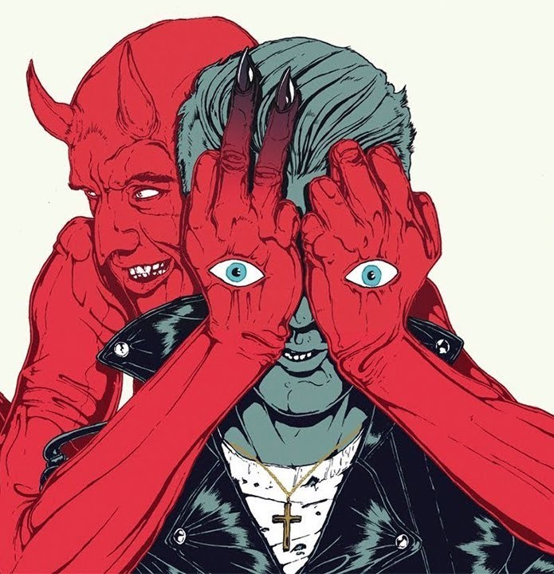

Josh Homme
The villain of the Palm Springs' desert
Here's a timeline of Josh Homme's most important achievements
- 1987-1995: Homme was a member of Kyuss, contributing to albums like "Wretch" (1991), "Blues for the Red Sun" (1992), and "Welcome to Sky Valley" (1994).
- 1996: Founded Queens of the Stone Age.
- 1998: Released Queens of the Stone Age's self-titled debut album.
- 2000: Released "Rated R," the second album by Queens of the Stone Age.
- 2002: Released "Songs for the Deaf," considered one of Queens of the Stone Age's most successful albums.
- 2003: Won a Grammy Award for Best Hard Rock Performance with Vocal for "No One Knows."
- 2004: Homme collaborated with other musicians to form the supergroup Them Crooked Vultures, featuring Dave Grohl and John Paul Jones.
- 2007: Released "Era Vulgaris," the fifth studio album by Queens of the Stone Age.
- 2013: Released "...Like Clockwork," another critically acclaimed album by Queens of the Stone Age.
- 2017: Released "Villains," the seventh studio album by Queens of the Stone Age.
- 2019: Contributed to the soundtrack of the TV series "True Detective."
- 2021: Queens of the Stone Age continued to be active, and Homme remained a prominent figure in the rock music scene.
- 2023: Released "In Times New Roman...," the eigth and latest studio album by Queens of the Stone Age.
“When they hit the stage, they’re the best rock band in the world, nobody even gets close. There’s amazing
live bands who write powerful songs, (…), there’s amazing live bands that can make an audience go like this (moves
up and down) (…), but, for musicality and as a musician you sit and watch Queens of the Stone Age and you’re like
that’s not fair, what the heck. (…)”
-- Dave Grohl on Queens of the Stone Age
Make sure the check Josh Homme's Wikipedia entry to learn more about him and the Queens of The Stone Age Spotify page to listen to his music.